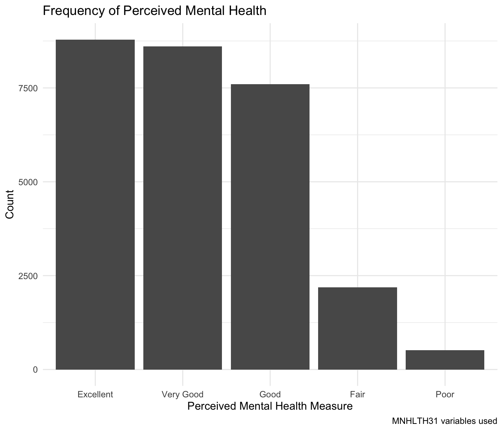
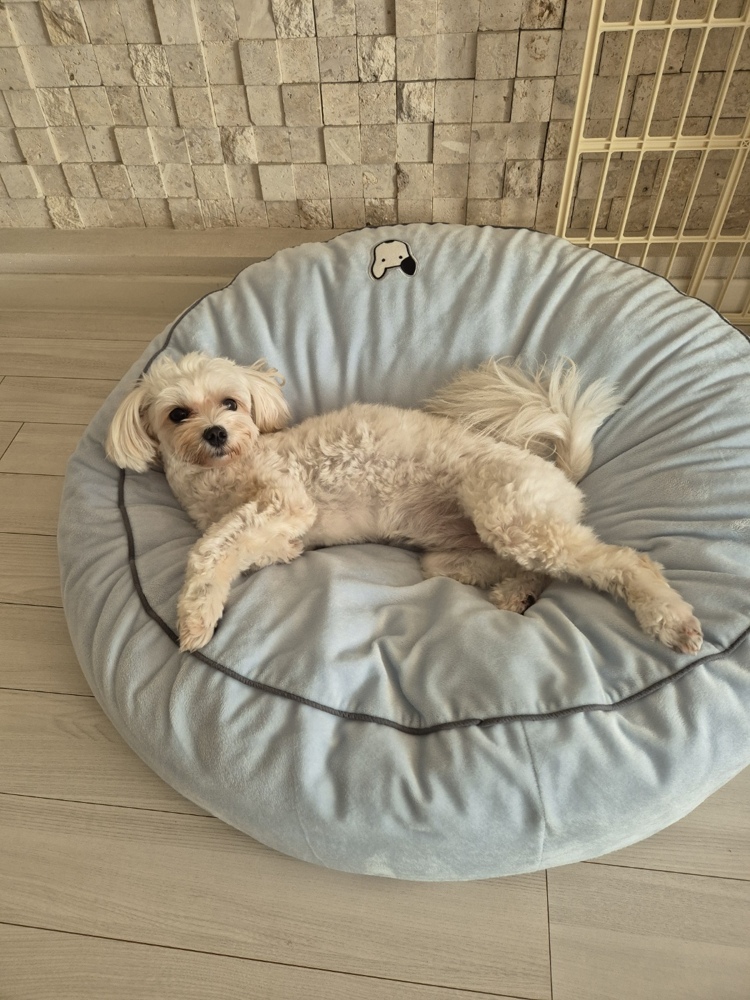
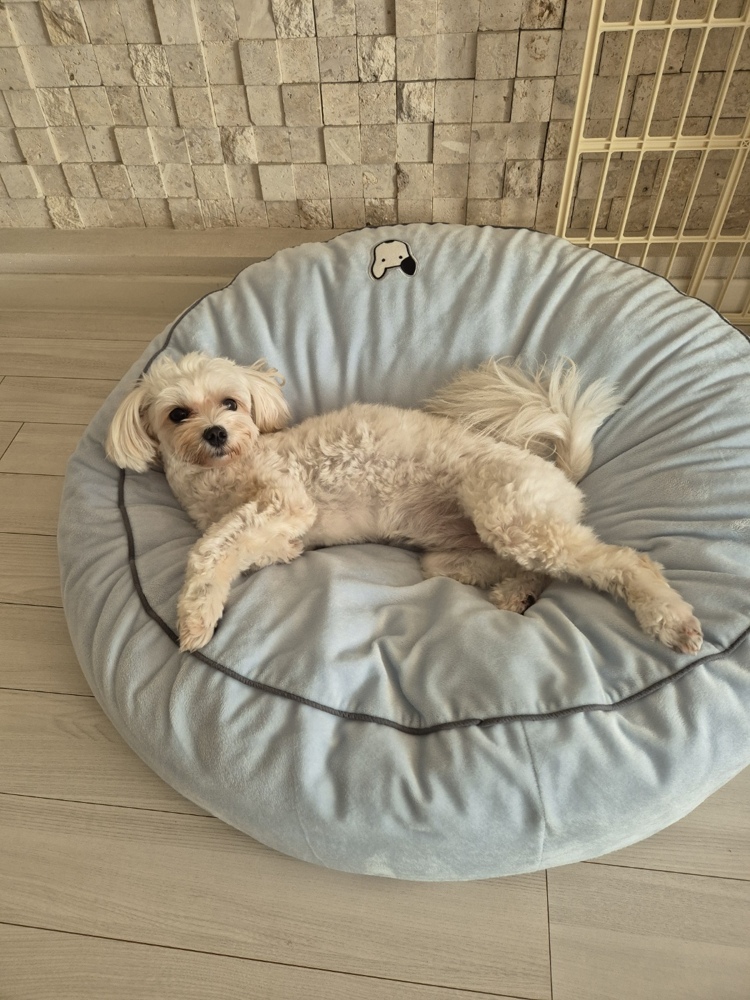

Learn more about Sunny Lee
1 Introduction
Welcome to my website. This site documents my life as a college student at UChicago. This is the most authentic and only chance you will get to learn about the real side of me. Get excited! There will be a brief overview of my childhood, familiy and friends, academic passions, and other parts of my life.
2 Childhood
Not invited to analyze my childhood Freudian style, but it helps to understand what kind of person I am.
I was born in Seoul, South Korea. Then at 7, I moved to Rochester, Minnesota and went to elementary school there.
I was a kids model.
I loved to eat rice in an ice bowl with cheese and kimchi.
I wanted to be a Rainbow Loom youtuber.
When I was 6, I went on a family ski trip to Hokkaido. My mother hired a ski instructor so I can learn how to ski properly, but when I was left alone with the instructor, I started bawling my eyes out because I was scared to be with a male adult by myself. The poor instructor didn’t know what to do and bought me churros as a nice gesture, but I hated churros and ended up crying even harder. That’s my only memory of the trip.
Bamber Valley Elementary School (2011-2015)
Seoul International School (2016-2022)
Some of my favorite memories include taking road trips with my dad and brother!!
We’ve been to 38 states.
2.1 Timeline
3 Family and friends
As a huge extrovert, family and friends are an important part of my life. People listed on here are my rock and the source of energy in my life, so…it’s a pretty important section.


4 Student Sunny
I love school. Not that I’m a nerd. But intellectual stimulation is a core part of my life. It keeps me going. As Bill Gates once said, “I don’t want my brain to stop working.” Gates and I have this in common. My greatest fear is not being able to think. In true Descartes spirit, I think, therefore I exist or cogito ergo sum.
I go to the University of Chicago, and I am a pre-med student majoring in Biology and Comparative Human Development.

Confused what a comparative human development major is? You can find out here:
4.1 Some of my research work with R
For example, my research passion is the social determinants of health. I made a quick example of how my research would look like to showcase the type of career path I want to go into.
4.1.1 Brief description and methodology of research project
My research project involves utilizing a publicly available Medical Expenditure Panel Survey (MEPS) database to extract relevant variables and find the relationship between them through statistical analyses. For example, in the 2021 Full Year Consolidated file in MEPS, there are variables that measure the social determinants of health, perceived mental health, and demographic information such as sex and race.
Out of the numerous variables, I make a new database with only the variables of interest using R. In this mini research project I am able to showcase, I only included social determinants of health factors that measure an individual’s social support.
Here are the variables I used: “DUPERSID”, “SDCHURCH”, “SDCOMM”, “SDCOMPAN”, “SDFAMILY”, “SDFRIENDS”, “SDGETTGT”, “MNHLTH31”, “SEX”, “RACETHX”.
The name of “MNHTLH31” was changed to “Perceived_Mental_Health” to make it more intuitive in my dataframe, and I added a new column “Social_Support_Sum” that takes all SDOH variables and sums up the numbers into the column. The less the number, the less social support they have.
To explore more about data collection method and genreal decription of MEPS, click here: 2021 Consolidated Full Year File document
To learn more about the variables, click here: 2021 Consolidated Full Year File codebook
Important: Although confusing, the scores are coded in such a way that lower perceived mental health score indicates better mental health and lower social support score indicates individual gets more help from their support system.
4.1.2 Research using R
Here is how my RStudio screen would look like.
#|label: source-Rscript
# Source R script including data information
source("student-sunny-data.R")
Attaching package: 'dplyr'The following objects are masked from 'package:stats':
filter, lagThe following objects are masked from 'package:base':
intersect, setdiff, setequal, union── Attaching core tidyverse packages ──────────────────────── tidyverse 2.0.0 ──
✔ forcats 1.0.0 ✔ stringr 1.5.1
✔ lubridate 1.9.4 ✔ tibble 3.2.1
✔ purrr 1.0.2 ✔ tidyr 1.3.1
── Conflicts ────────────────────────────────────────── tidyverse_conflicts() ──
✖ dplyr::filter() masks stats::filter()
✖ dplyr::lag() masks stats::lag()
ℹ Use the conflicted package (<http://conflicted.r-lib.org/>) to force all conflicts to become errors
Attaching package: 'scales'
The following object is masked from 'package:purrr':
discard
The following object is masked from 'package:readr':
col_factor
Attaching package: 'psych'
The following objects are masked from 'package:scales':
alpha, rescale
The following objects are masked from 'package:ggplot2':
%+%, alpha
Loading required package: Matrix
Attaching package: 'Matrix'
The following objects are masked from 'package:tidyr':
expand, pack, unpack
Attaching package: 'kableExtra'
The following object is masked from 'package:dplyr':
group_rows
Suggested APA citation: Thériault, R. (2023). rempsyc: Convenience functions for psychology.
Journal of Open Source Software, 8(87), 5466. https://doi.org/10.21105/joss.05466
Attaching package: 'flextable'
The following objects are masked from 'package:kableExtra':
as_image, footnote
The following object is masked from 'package:purrr':
compose# Seed for random number generation
set.seed(42)
# Set global chunk options
knitr::opts_chunk$set(
cache.extra = knitr::rand_seed,
fig.height = 6,
fig.width = 7,
message = FALSE,
warning = FALSE,
comment = ""
)# Produce the table as an APA formatted table with rempsyc
h233_cleaned.long %>%
group_by(Variables) %>%
summarize(mean = mean(value),
median = median(value),
sd = sd(value),
min = min(value),
max = max(value),
range = max-min,
range = diff(range(value))
) %>% nice_table()Variables | mean | median | sd | min | max | range |
|---|---|---|---|---|---|---|
Perceived_Mental_Health | 2.17 | 2.00 | 1.02 | 1.00 | 5.00 | 4.00 |
Social_Support_Sum | 8.55 | 10.00 | 6.79 | 0.00 | 28.00 | 28.00 |
Summary statistics table
4.1.3 Summary statistics of samples
ggplot(h233_cleaned, aes(x = SEX)) +
geom_bar(fill = "lightpink") +
labs(title = "Sex Frequency", x = "Sex", y = "Count") +
theme(plot.title = element_text(size = 16, face = "bold", hjust = 0.5))+
theme_minimal()There is a fairly equal representation of both categories.
ggplot(h233_cleaned, aes(x = RACETHX)) +
geom_bar(fill = "lavender") +
labs(title = "Race Frequency", x = "Race", y = "Count") +
theme(plot.title = element_text(size = 16, face = "bold", hjust = 0.5))+
theme_minimal()Most of the sample size is Non-Hispanic White, but there is a good representation of each group.
#|label: bar-plot
# dplyr package has filter() function
library(dplyr)
# Define factor labels
mental_health_labels <- c("1" = "Excellent",
"2" = "Very Good",
"3" = "Good",
"4" = "Fair",
"5" = "Poor")
# Filter out invalid values and recode as factors
h233_filtered <- h233_cleaned %>%
filter(Perceived_Mental_Health %in% 1:5) %>%
mutate(Perceived_Mental_Health = factor(Perceived_Mental_Health,
levels = 1:5,
labels = mental_health_labels))
# Create the plot
ggplot(h233_filtered, aes(x = Perceived_Mental_Health)) +
geom_bar() +
labs(title = "Frequency of Perceived Mental Health",
x = "Perceived Mental Health Measure",
y = "Count",
caption = "MNHLTH31 variables used") +
theme_minimal()
From this figure, we can see that the distribution of perceived mental health in individuals is more positive than negative.
4.1.4 Correlation statistics
# recall the correlation of mass and height from above
pmh_ss_corr <- cor.test(h233_cleaned$Perceived_Mental_Health, h233_cleaned$Social_Support_Sum)
pmh_ss_corr
Pearson's product-moment correlation
data: h233_cleaned$Perceived_Mental_Health and h233_cleaned$Social_Support_Sum
t = 21.236, df = 27681, p-value < 2.2e-16
alternative hypothesis: true correlation is not equal to 0
95 percent confidence interval:
0.1150017 0.1381841
sample estimates:
cor
0.1266102 # model the effect of ss on pmh
# the formula here is in the syntax [outcome var] ~ [predictor var]
pmh_ss_lm <- lm(Perceived_Mental_Health ~ Social_Support_Sum, data = h233_cleaned)
# the output of the model object itself doesn't have a lot of info
# so you'll want to look at the summary() of the model
summary_pmh_ss_lm <- summary(pmh_ss_lm)
summary_pmh_ss_lm
Call:
lm(formula = Perceived_Mental_Health ~ Social_Support_Sum, data = h233_cleaned)
Residuals:
Min 1Q Median 3Q Max
-1.5412 -1.0075 -0.1790 0.7638 2.9925
Coefficients:
Estimate Std. Error t value Pr(>|t|)
(Intercept) 2.0075112 0.0097969 204.91 <2e-16 ***
Social_Support_Sum 0.0190585 0.0008975 21.24 <2e-16 ***
---
Signif. codes: 0 '***' 0.001 '**' 0.01 '*' 0.05 '.' 0.1 ' ' 1
Residual standard error: 1.014 on 27681 degrees of freedom
Multiple R-squared: 0.01603, Adjusted R-squared: 0.01599
F-statistic: 451 on 1 and 27681 DF, p-value: < 2.2e-164.1.5 Results
The correlation between perceived mental health and social support shows that there is some positive association: as social support increases, perceived mental health tends to improve. However, the effect is weak (r = 0.1266).
The linear model shows that for every additional unit of social support, perceived mental health increases by r 0.0186 units.However, while this effect is statistically significant (p = <1e-16)1, the overall model fit is very weak (R² = 0.016), meaning social support alone does not explain much of the variation in perceived mental health.
The regression model also provides an intercept, which in this case is a good example of when the intercept does not have a meaningful interpretation: it suggests that when social support is zero, perceived mental health is 2.0075. However, social support cannot truly be zero in a meaningful way in this dataset, making the intercept largely irrelevant to our interpretation.
Key Takeaways:
- Social support is significantly associated with better perceived mental health, but the relationship is very weak (r = 0.1266).
- Social support has a statistically significant positive effect, but the effect size is extremely small (β = 0.0186).
- The model is very weak (R² = 0.0160), meaning that social support alone does not strongly predict mental health—many other factors are involved.
- The intercept (1.9625) represents perceived mental health when social support is zero, but its interpretation is not particularly meaningful, except for estimating average baseline mental health in the absence of support.
ggplot(h233_cleaned, aes(x = Social_Support_Sum, y = Perceived_Mental_Health)) +
geom_point(alpha = 0.5, color = "steelblue") + # Unified point color
geom_smooth(method = "lm", se = FALSE, color = "darkred", linetype = "solid") + # Single regression line
labs(
title = "Effect of Social Support on Perceived Mental Health",
subtitle = "Higher social support is associated with better perceived mental health",
x = "Social Support Score",
y = "Perceived Mental Health"
) +
theme_minimal() +
theme(
plot.title = element_text(size = 18, face = "bold", hjust = 0.5), # Bold & centered title
plot.subtitle = element_text(size = 14, hjust = 0.5, color = "gray30"), # Subtitle for context
axis.title = element_text(size = 14, face = "bold"), # Larger axis titles
axis.text = element_text(size = 12), # Axis label size
legend.position = "none", # Removes legend since no categorical colors
panel.grid.major = element_line(linetype = 'dashed', color = "gray80"), # Dashed major grid lines
panel.grid.minor = element_blank() # Remove minor grid lines
)#|label: pmh-ss-lm_extended
# See if race or sex are predictors of mental health
pmh_ss_lm_extended <- lm(Perceived_Mental_Health ~ Social_Support_Sum + SEX + RACETHX, data = h233_cleaned)
summary_pmh_ss_lm_extended <- summary(pmh_ss_lm_extended)
summary_pmh_ss_lm_extended
Call:
lm(formula = Perceived_Mental_Health ~ Social_Support_Sum + SEX +
RACETHX, data = h233_cleaned)
Residuals:
Min 1Q Median 3Q Max
-1.5840 -1.0239 -0.1462 0.7637 3.2364
Coefficients:
Estimate Std. Error t value Pr(>|t|)
(Intercept) 1.9624817 0.0151374 129.644 < 2e-16 ***
Social_Support_Sum 0.0185511 0.0009078 20.436 < 2e-16 ***
SEXFemale 0.0954969 0.0122399 7.802 6.30e-15 ***
RACETHXNon-Hispanic White -0.0044871 0.0150635 -0.298 0.76580
RACETHXNon-Hispanic Black 0.0622161 0.0203251 3.061 0.00221 **
RACETHXNon-Hispanic Asian -0.1988676 0.0301075 -6.605 4.04e-11 ***
RACETHXNon-Hispanic Other 0.0614449 0.0341010 1.802 0.07158 .
---
Signif. codes: 0 '***' 0.001 '**' 0.01 '*' 0.05 '.' 0.1 ' ' 1
Residual standard error: 1.012 on 27676 degrees of freedom
Multiple R-squared: 0.02078, Adjusted R-squared: 0.02057
F-statistic: 97.91 on 6 and 27676 DF, p-value: < 2.2e-16# Does the effect of social support on mental health depend on sex or race
pmh_ss_lm_interaction <- lm(Perceived_Mental_Health ~ Social_Support_Sum * SEX + Social_Support_Sum * RACETHX, data = h233_cleaned)
summary_pmh_ss_lm_interaction <- summary(pmh_ss_lm_interaction)
summary_pmh_ss_lm_interaction
Call:
lm(formula = Perceived_Mental_Health ~ Social_Support_Sum * SEX +
Social_Support_Sum * RACETHX, data = h233_cleaned)
Residuals:
Min 1Q Median 3Q Max
-1.8727 -0.9829 -0.1374 0.7796 3.1796
Coefficients:
Estimate Std. Error t value
(Intercept) 1.9828830 0.0201184 98.561
Social_Support_Sum 0.0159554 0.0020108 7.935
SEXFemale 0.0497670 0.0195722 2.543
RACETHXNon-Hispanic White -0.0068993 0.0229834 -0.300
RACETHXNon-Hispanic Black 0.1017440 0.0305635 3.329
RACETHXNon-Hispanic Asian -0.1624467 0.0486158 -3.341
RACETHXNon-Hispanic Other -0.0402663 0.0475692 -0.846
Social_Support_Sum:SEXFemale 0.0054898 0.0018027 3.045
Social_Support_Sum:RACETHXNon-Hispanic White 0.0001824 0.0022000 0.083
Social_Support_Sum:RACETHXNon-Hispanic Black -0.0046998 0.0028148 -1.670
Social_Support_Sum:RACETHXNon-Hispanic Asian -0.0041493 0.0044815 -0.926
Social_Support_Sum:RACETHXNon-Hispanic Other 0.0152365 0.0048660 3.131
Pr(>|t|)
(Intercept) < 2e-16 ***
Social_Support_Sum 2.18e-15 ***
SEXFemale 0.011004 *
RACETHXNon-Hispanic White 0.764036
RACETHXNon-Hispanic Black 0.000873 ***
RACETHXNon-Hispanic Asian 0.000835 ***
RACETHXNon-Hispanic Other 0.397294
Social_Support_Sum:SEXFemale 0.002327 **
Social_Support_Sum:RACETHXNon-Hispanic White 0.933915
Social_Support_Sum:RACETHXNon-Hispanic Black 0.094995 .
Social_Support_Sum:RACETHXNon-Hispanic Asian 0.354516
Social_Support_Sum:RACETHXNon-Hispanic Other 0.001743 **
---
Signif. codes: 0 '***' 0.001 '**' 0.01 '*' 0.05 '.' 0.1 ' ' 1
Residual standard error: 1.011 on 27671 degrees of freedom
Multiple R-squared: 0.02169, Adjusted R-squared: 0.0213
F-statistic: 55.78 on 11 and 27671 DF, p-value: < 2.2e-16# Compare the models
cat("Original Model R²:", summary_pmh_ss_lm$r.squared, "\n")Original Model R²: 0.01603014 cat("Extended Model R² (with Sex & Race):", summary_pmh_ss_lm_extended$r.squared, "\n")Extended Model R² (with Sex & Race): 0.02078436 cat("Interaction Model R²:", summary_pmh_ss_lm_interaction$r.squared, "\n")Interaction Model R²: 0.02169229 4.1.6 Results with Sex and Race
Adding sex and race to the model results in a small increase in explanatory power (R² = 0.0208), but the effect of social support remains weak (β= 0.0186, p<2.2e-16).
4.1.6.1 Extended model: Adding Sex and Race as additional predictors
- Women report higher perceived mental health than men (β= 0.0955, p= 6.30e-15).
- Non-Hispanic Black individuals have significantly higher PMH compared to the reference race (β= 0.0622, p= 0.0022).
- Non-Hispanic Asian individuals have significantly lower PMH (β= -0.1989, p= 4.04e-11).
- Other racial categories show no strong differences in perceived mental health.
5 Other passions and quirks
Yogi🧘, foodie, #trackstar, dog mom, neat freak, and more
5.1 RYT-200
Ever since coming to college and being far from my family, I felt a huge drop in my support system. I was feeling isolated and needed a new hobby. Taking a yoga class as the physical education requirement my first semester in college, I felt like I found the perfect de-stressing mechanism.
Not only did I find peace in the movements, but I also found a sense of community in my yoga studio.
I got yoga certified in 2023, and yoga has been an integral part of my life since!
5.2 Eat and Run
I also fun and love to visit restaurants and coffee shops.
Here are links to my running playlist and Bite, a student organization on campus that writes food magazines and blogs.
5.3 My dog Songyee
Name: Songyee
Birthday: April 18, 2023
Breed: Maltipoo
Fun fact: She loves veggies.
She’s such a picky eater and refuses to eat kibbles. She is the biggest rebel and would bark when she doesn’t get her way. She loves her puppucinos, walks, watching TV with the family, and napping with mom.
Aaaand…you already saw a picture of me and my dog earlier, but here are some more!
 

6 That’s it!
Thank you for visiting my website 🤍💌💞
Footnotes
Statistical significance was determined at p < 0.05.↩︎